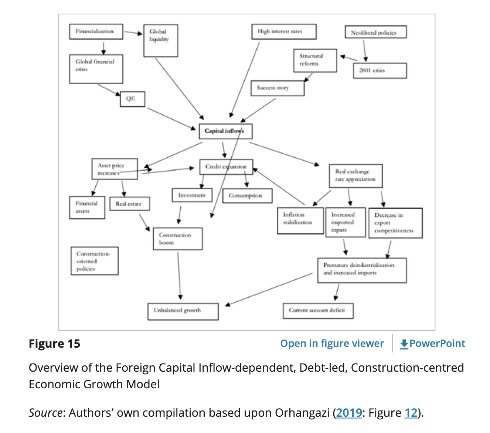

48 Turkey
Karas
(see also cap/dependency)
We detail the consolidation and limits of financial statecraft and authoritarian financialization in Hungary and Turkey over the past two decades, analyzing how changing global liquidity conditions between the early 2000s and the 2020-22 Polycrisis have affected the state’s management of money.
In both countries, financial crises in the early 2000s incentivized public interventions which momentarily consolidated a centralized system of political control over money managed by the executive from the mid- to late 2010s onwards. Soon, “defensive” forms of financial statecraft were revamped into “offensive” tools, allowing the executive to ride the wave of cheap global capital liquidity by deepening credit-based accumulation, which enhanced GDP growth and co-opted large social constituencies via subsidized lending.
The semblance of an economic miracle broke down in both cases as soon as global credit conditions worsened: the hitherto expanded and centralized executive control over money proved unable to simultaneously manage public debt and the financialization of the private sector.
Faced with this dilemma, Hungary and Turkey first followed different strategies: In the context of peak global inflation, and the resulting interest rate hikes in Core Central Banks in 2022, a disinflationary power bloc prevailed in Hungary between the executive, non-tradable domestic capital factions, and households hurt by inflation. For Viktor Orban, this meant sacrificing large-scale subsizied lending programs for households and SMEs which had previously played a crucial role in stabilizing the Fidesz regime.
In Turkey, a narrow power bloc between Erdogan’s hyper-presidential regime, export-oriented SMEs, and the construction sector maintained a loose monetary policy against the resistance of the Central Bank and the interests of wage-earning households hurt by inflation. In the second half of 2023, Erdogan sidestepped this strategy as the costs on the sustainability of public debt proved overwhelming, and even exporting firms were hurt by rising intermediary import costs due to hyperinflation and collapsing exchange rate: thereafter, Turkey signalled a similar approach to Hungary’s conversion to an orthodox crisis-management strategy but at the time of writing, its full adoption and impact are yet to be seen.
In fair weather, a dramatically expanded political and institutional apparatus empowered the Hungarian and Turkish executives to centralize control over the domestic circuit of money, giving the illusion that semi-peripheral financial statecraft had managed to simulatenously contain the destabilizing effects of global financial mobility, while harnessing credit-based accumulation for cultivating patron-client relations to help the political stabilization of these regimes. The dramatic shift in global credit conditions in 2022 lifted the veil over this illusion: no matter the expansion of executive control over the domestic management and allocation of money, a global liquidity contraction forced these regimes to prioritize fiscal solvency and the exchange rate by opting for austerity and aggressive interest rate hikes, which undermined their capacity for pacifying wide cross-sections of society via subsizied credit.
The Hungarian and Turkish pathways contain multiple lessons which resonate in the wider Global South.
Karas (2023) Financial Statecraft and its Limits in the Semi-Periphery
Tooze
Since the early 2000s Turkey has relied heavily on foreign borrowing (mainly by the private sector) to finance large current account deficits brought on by rapid growth. Erdogan had ridden a wave of capital inflows that were attracted to Turkey by slightly higher interest rate margins.

Figure: Systematically promote growth through construction rather than manufacturing, agriculture and exports.
Turkey’s economic experiment ran much longer than it should have, thanks to the more elastic supply of finance. The economic costs will be larger as a result.
Erdogan has long cultivated an economic ideology that consists of a brew of convenient fragments of Muslim doctrine, productivism, hostility towards outside pressure. He is prone to associating any critics with external threats.
Warring with Turkey’s secular business interests is now a key device through which Erdogan rallies his electoral troops.
He is egged on by advisors such as Cemil Ertem who systematically promotes the idea of politico-economic autonomy.
The main message given by Ertem’s presentation is economic independence. Over and over, he emphasises that it is impossible to be economically independent while carrying out a financial policy based on high interest rates or International Monetary Fund recommendations. Ertem asserts that a policy of high interest rates has triggered a vicious circle of low exports, lower employment, high imports, growing external debt and a country with an external dependence, which again requires higher interest rates, completing a full circle. “As a result, the country is posting a high current account deficit and depending on short-term hot money inflows and raising the external debt,” he says in the presentation. “This economic model, due to its external dependency, is laying [the] ground for economic attacks.” The chief economic adviser says his new model, based on lower interest rates, will increase exports and decrease imports, leading to a current account surplus and higher growth with high employment. He believes it will make Turkish exports more competitive with a depreciated lira. “We will incentivise foreign direct investments instead of short-term hot money inflows, and stabilise the foreign finances,” Ertem says. “And that’s how we will become a stronger country that is protected from the external financial shocks.”
Certainly the devaluations of recent years have had an effect. “exports jumped 33 percent in November, reaching $21.5bn, while the current account posted a $3.16bn surplus for October. Unemployment has also decreased, by about two percentage points, from 13.1 percent to 11.2 percent in October year-on-year. GDP grew by seven percent in the third quarter of 2021.”
With import prices soaring, the economic circumstances threaten to crush domestic demand; a recent 50 per cent rise in the minimum wage will wipe out the cost advantages of the currency depreciation.
For devaluation to yield dramatic benefits would require an industrial policy to back it up.
In recent months, as Erdogan launched another easing cycle, he has reportedly cited China’s economic transformation in the wake of 1978 reforms as evidence that his model would bear fruit.
It is economically crazy to think that a country can build an export-oriented economy simply on the back of a trashed currency.If that were the case, Zimbabwe would be a tech superpower.
Some businesses are gaining from the slide in the currency. Most of the companies listed on the Borsa Istanbul are benefiting from the weak lira - publicly listed airlines, defence groups, carmakers and chemicals producers as companies that enjoy foreign currency-denominated revenues and Turkish lira-denominated staffing costs. Erdogan is prioritising exporters over households.
Turk Dolar: The new tool, labelled the “Turkish dollar” by some on social media, offers a solution to this problem: if investors convert their foreign currencies into lira and deposit them in a savings account with a certain term of maturity, Turkey’s treasury guarantees that it will get the same return as forex markets. And if the forex markets drop below the official interest rates, the investor will still get an official interest rate return.
Tooze (2021) Turkey’s financial crisis
Özgür Orhangazi,A. Erinç Yeldan in Development and Change (2021)
Noah Smith
But there were always three flies in the ointment of Turkey’s long boom. The first was a reliance on external borrowing. The second was political instability, ultimately leading to bad macroeconomic policy. And the third was Erdogan’s bizarre love of low interest rates. The root of the problem was external borrowing. Turkey’s fairly high investment rate isn’t matched by an equally high savings rate, meaning that it has had to run a big current account deficit
While some of this investment was in the aforementioned productivity-boosting manufacturing industries, a fair amount went into real estate (encouraged by the Erdogan administration) and into grandiose construction projects undertaken by the government. Since many of these projects were undertaken or encouraged for populist political reasons, they didn’t earn a great return on investment and ultimately set the country up for a rapid reversal of capital inflows. The second factor making things worse was that a ton of Turkey’s external debt was short-term, leaving it even more vulnerable to a sudden stop in foreign investment. Let’s ask why Erdogan was so eager to encourage foreign investment into sectors that weren’t going to boost long-term productivity and set the country up for a crisis. The fairly obvious answer is political instability.
When populist leaders face challenges to their rule, a very common response is to pump up short-term economic growth in order to shore up political support, even at the expense of long-term productivity growth.
Erdogan needs to use his near-dictatorial power to channel investment away from speculative real estate or white elephant construction projects, and back toward manufacturing industries.